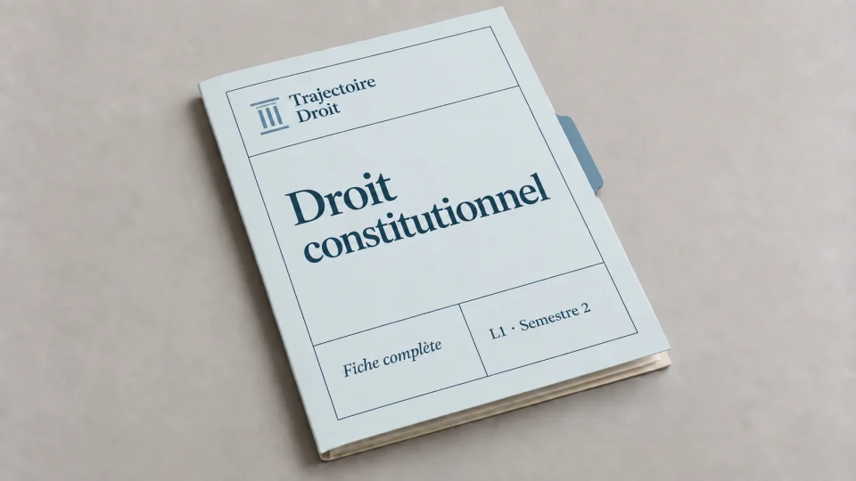

TD de droit constitutionnel L1 corrigé : méthode et exercice type
Un TD de droit constitutionnel en L1 se prépare avec des documents (des articles de la Constitution et des décisions du Conseil constitutionnel) et se termine par une dissertation ou un commentaire noté. Cette page t'explique le déroulement des séances et la méthode des deux exercices, puis te donne le corrigé d'une dissertation sur le référendum sous la Ve République, du décorticage jusqu'au plan détaillé.
Les travaux dirigés de droit constitutionnel surprennent beaucoup d'étudiants, parce que le cours magistral donne le panorama de la matière alors que le TD exige déjà une copie rédigée. Le chargé de TD note en effet un exercice écrit en cours de semestre, et cette note compte dans la moyenne de la matière. Chaque séance part donc d'un dossier de documents que tu dois avoir lus avant d'arriver.
Les sujets changent d'une faculté à l'autre, mais les exercices restent les mêmes. C'est pourquoi cette page reprend le schéma classique d'un TD de L1, avec ses séances, ses deux exercices et un corrigé complet que tu peux comparer avec ta propre copie. L'exemple est original, rédigé pour ce guide, et il ne reprend aucun sujet de nos dissertations corrigées vendues. Pour organiser ton travail sur tout le semestre, tu peux ensuite lire le guide pour réviser le droit constitutionnel en L1 qui prolonge cette page.

Fiche complète de droit constitutionnel L1
Toute la Ve République en 123 pages
La fiche complète du semestre 2 reprend les cinq thèmes de la Ve République, de sa genèse jusqu'à la révision constitutionnelle et au droit supranational, avec les articles et les décisions que les TD mobilisent. Les dix dissertations corrigées du semestre te montrent ensuite comment rédiger la copie.
- Les articles et les décisions de chaque séance de TD
- 10 dissertations corrigées, du brouillon à la copie
- Téléchargement immédiat
Paiement sécurisé. Tes fichiers sont envoyés par email dès la confirmation.
Comment se déroule un TD de droit constitutionnel en L1 ?
Le TD suit le cours magistral, avec en général une dizaine de séances par semestre. Chaque séance traite un thème et repose sur un dossier de documents. Ce déroulement varie d'une faculté à l'autre, donc vérifie le programme de ton chargé de TD.
Au semestre 1, la théorie générale
Les premières séances définissent l'État et la souveraineté. Les suivantes portent sur la Constitution, puis sur la séparation des pouvoirs et les grands types de régimes. Les documents sont souvent des textes historiques, comme la Déclaration de 1789 ou des extraits de Montesquieu et de Rousseau. Tu apprends ici à définir les notions et à les distinguer, ce qui sert ensuite pour toutes les dissertations.
Au semestre 2, la Ve République
Les séances suivent le texte de 1958 et sa pratique. Tu étudies d'abord la naissance du régime, puis l'élection du Président au suffrage universel direct. Viennent ensuite ses pouvoirs, notamment dans ses rapports avec le Premier ministre. Viennent ensuite le Parlement et le domaine de la loi. Le référendum fait souvent l'objet d'une séance à part, avant celles qui portent sur le Conseil constitutionnel et le bloc de constitutionnalité. Les documents mêlent des articles de la Constitution et des décisions du Conseil, avec des articles de doctrine.
Ce que le chargé de TD attend
Tu arrives en ayant lu les documents et surligné les passages utiles. En effet, la séance sert à discuter des documents que tu connais déjà. Le chargé de TD interroge à l'oral et corrige la méthode. Il rend ensuite les copies avec des remarques qui reviennent d'un exercice à l'autre. Tu as donc intérêt à relire ces remarques avant chaque nouvelle copie, car elles annoncent les points que le partiel sanctionnera aussi.
Quels exercices tombent en TD de droit constitutionnel ?
Deux exercices dominent, la dissertation et le commentaire de texte ou de décision. Les deux se rédigent en deux parties et deux sous-parties.
La dissertation répond à une question posée par un sujet, par exemple « Le référendum législatif sous la Ve République ». Tu commences par lister toutes les idées qui touchent au sujet, puis tu les ranges en deux grandes parties, chacune divisée en deux sous-parties. Les intitulés du plan se rédigent sans verbe conjugué, parce qu'ils résument le contenu qu'ils annoncent. L'introduction se rédige au brouillon avant le reste et suit sept étapes, détaillées dans la méthode de la dissertation juridique.
Le commentaire porte sur un texte, comme un article de doctrine ou une décision du Conseil constitutionnel. Tu repères d'abord le thème et la thèse de l'auteur. Ensuite, tu confrontes ses idées à tes connaissances, en les illustrant ou en les discutant avec nuance. Pour une décision de justice, la démarche ressemble à celle du commentaire d'arrêt, avec la même attention au sens et à la portée de la solution. Dans les deux exercices, le piège le plus fréquent reste le hors-sujet. Un sujet sur le référendum reste centré sur le référendum et n'a pas à retracer toute la Ve République.
Une dissertation corrigée : le référendum législatif sous la Ve République
Voici la démarche complète sur un sujet classique de la séance consacrée au référendum, du décorticage du sujet jusqu'au plan détaillé.
Le décorticage du sujet
Le référendum législatif désigne le vote par lequel le peuple adopte lui-même une loi, au lieu du Parlement. Il correspond à l'article 11 de la Constitution et se distingue du référendum constituant, qui sert à réviser la Constitution selon l'article 89. En effet, les mots « sous la Ve République » imposent de traiter le régime depuis 1958, en comptant la pratique réelle en plus du texte. Le référendum local de l'article 72-1 reste donc en dehors du sujet. Le référendum constituant de l'article 89 reste à l'arrière-plan, mais celui de 2000 entre dans le décompte des consultations nationales.
Le référendum législatif sert-il réellement à faire exercer la souveraineté par le peuple, ou le pouvoir exécutif s'en sert-il surtout pour son propre compte ? Cette interrogation devient ta problématique.
L'introduction
Le 28 octobre 1962, les Français votent « oui » à 62,25 % pour élire désormais leur Président au suffrage universel direct. Ainsi, ce jour-là, le peuple adopte lui-même une loi qui transforme le régime, alors que la Constitution prévoit une autre procédure de révision. Le référendum législatif, que l'article 11 de la Constitution du 4 octobre 1958 organise, désigne cette consultation par laquelle les électeurs adoptent ou rejettent un projet ou une proposition de loi. Ce mécanisme trouve son fondement dans l'article 3 de la Constitution, car celui-ci dispose que la souveraineté nationale appartient au peuple, qui l'exerce par ses représentants et par la voie du référendum.
Le sujet intéresse parce que ce mécanisme crée une tension dans les institutions. Il donne la parole directement aux citoyens, et pourtant le texte laisse au Président de la République le dernier mot sur son déclenchement. Depuis 1958, la pratique a d'abord été très présidentielle, ce qui a valu au référendum le reproche de plébiscite. Des réformes récentes ont ensuite voulu l'ouvrir aux citoyens. Le référendum législatif est-il alors un véritable instrument de souveraineté populaire, ou un outil resté dans les mains de l'exécutif ?
Pour y répondre, nous verrons d'abord que le référendum législatif est un instrument maîtrisé par l'exécutif (I), avant d'étudier son ouverture progressive au peuple, qui demeure limitée (II).
Le plan détaillé
I. Un instrument maîtrisé par l'exécutif
A. Une procédure que le Président contrôle. Le Président de la République « peut » soumettre un texte au référendum, sur proposition du Gouvernement pendant les sessions ou sur proposition conjointe des deux assemblées. Cette décision relève de son pouvoir propre, puisque l'article 19 la dispense de contreseing du Premier ministre. Le Président ne peut pas agir seul, car il lui faut une proposition du Gouvernement ou des deux assemblées. En revanche, il peut refuser de convoquer le peuple même si cette proposition existe. Lorsqu'elle vient du Gouvernement, celui-ci fait une déclaration devant chaque assemblée, suivie d'un débat sans vote, et les assemblées ne peuvent donc pas empêcher la consultation. Tu retiens ainsi que le texte donne au Président le dernier mot.
B. Un usage plébiscitaire et un contrôle absent. La pratique gaullienne a transformé la consultation en vote de confiance dans la personne du Président. Le 27 avril 1969, le projet sur la régionalisation et le Sénat recueille 52,41 % de « non », et le général de Gaulle quitte ses fonctions par un communiqué du 28 avril. Le vote a porté sur le texte, mais aussi sur la personne qui le proposait, ce qui explique le reproche de plébiscite. Le référendum du 28 octobre 1962 pose un autre problème, car de Gaulle a utilisé l'article 11 pour réviser les règles d'élection du Président (articles 6 et 7), en contournant la procédure de l'article 89. Saisi, le Conseil constitutionnel refuse de contrôler cette loi. Dans sa décision n° 62-20 DC du 6 novembre 1962, il juge que l'article 61 vise les lois votées par le Parlement, ce qui exclut celles que le peuple adopte par référendum, car elles sont l'expression directe de la souveraineté nationale. Il confirme cette solution le 23 septembre 1992 à propos de la loi de ratification du traité de Maastricht (décision n° 92-313 DC). Pour le détail de la crise de 1962, tu peux lire l'explication de la décision sur la loi référendaire.
II. Une ouverture progressive mais limitée du référendum aux citoyens
A. Un champ élargi mais un usage devenu rare. Le constituant a d'abord étendu le domaine de l'article 11. Le texte de 1958 visait surtout l'organisation des pouvoirs publics et la ratification de certains traités. La révision du 4 août 1995 a ajouté les réformes de politique économique ou sociale et les services publics qui y concourent. Celle du 23 juillet 2008 y a joint la politique environnementale. Pourtant, ce champ élargi sert peu. En effet, on compte dix référendums nationaux depuis 1958. Huit reposent sur l'article 11, un seul (celui du 24 septembre 2000 sur le quinquennat, adopté à 73,21 %) sur l'article 89, et celui de 1958 est à part. Par ailleurs, le peuple a rejeté deux textes, en 1969 et en 2005 (54,67 % de « non » au traité établissant une Constitution pour l'Europe). Le dernier de cette liste date donc de 2005.
B. Une initiative partagée très difficile à exercer. La révision de 2008 a créé un référendum d'initiative partagée. Elle exige le soutien d'un cinquième des membres du Parlement, soit 185 parlementaires, puis celui d'un dixième des électeurs inscrits, soit environ 4,7 millions d'électeurs lors de l'épreuve de 2019 (ce seuil varie avec le corps électoral). Cette seconde condition s'est révélée très difficile à atteindre. En 2020, la proposition de loi sur les aérodromes de Paris, déclarée conforme par la décision n° 2019-1 RIP du 9 mai 2019, a recueilli 1 093 030 soutiens valides, très loin du seuil. Le Conseil constitutionnel a aussi interprété strictement la notion de « réforme ». Le 14 avril 2023, il écarte la proposition sur l'âge de départ à la retraite, car elle ne change pas l'état du droit. Le 17 juin 2026, il écarte une proposition sur la fin de vie en relevant que les travaux de la loi constitutionnelle de 1995 ont exclu les questions de société du champ de l'article 11. Tu peux donc écrire que le peuple dispose d'un droit d'initiative qui existe dans le texte, mais que les citoyens exercent très difficilement.
Le devoir s'arrête à la fin de la seconde partie, car la dissertation juridique ne comporte pas de conclusion. Tes deux parties ont déjà montré que le référendum législatif exprime la souveraineté populaire tout en restant largement piloté par le Président. Si ton chargé de TD accepte une ouverture, tu peux terminer sur les propositions récurrentes d'élargir l'article 11 aux questions de société, qui relancent le débat sur la place du citoyen dans un régime représentatif.
Trois questions d'application corrigées sur l'article 11
En séance, le chargé de TD pose souvent des questions courtes pour vérifier que tu maîtrises le texte. Voici trois exemples avec leur correction.
Un projet de loi sur la gestion publique de l'eau peut-il être soumis au référendum ?
Tu réponds oui, car l'article 11 vise les réformes relatives à la politique économique, sociale ou environnementale de la nation et aux services publics qui y concourent. Le sujet se rattache à la politique environnementale et aux services publics. Le Président décide de la consultation sur proposition du Gouvernement ou des deux assemblées, et il garde le dernier mot, car il peut refuser. En revanche, si des parlementaires et des citoyens veulent l'imposer par l'initiative partagée, le Conseil constitutionnel exige alors que le texte change l'état du droit (décision de 2023).
Des citoyens peuvent-ils imposer un référendum sur une loi votée le mois dernier ?
Tu réponds non. L'article 11 interdit que la proposition ait pour objet d'abroger une disposition législative promulguée depuis moins d'un an. En outre, l'initiative suppose d'abord le soutien d'un cinquième des parlementaires, puis celui d'un dixième des électeurs inscrits, et le Conseil constitutionnel contrôle chaque condition.
Que se passe-t-il si le peuple adopte le texte ?
Tu précises que le Président de la République promulgue la loi dans les quinze jours qui suivent la proclamation des résultats. Le Conseil constitutionnel ne contrôle pas la loi adoptée, puisque les décisions de 1962 et de 1992 excluent de son contrôle les lois votées par le peuple. Il intervient seulement avant le vote, pour les propositions d'initiative partagée, et pour veiller à la régularité du scrutin. À l'inverse, si le peuple rejette une proposition d'initiative partagée, aucune nouvelle proposition sur le même sujet ne peut être présentée avant deux ans à compter du scrutin.
Quelles erreurs coûtent le plus de points en TD ?
Faire le plan avant d'avoir défini le sujet
Tu perds des points si ton plan ne découle pas de la problématique. Définis d'abord chaque mot du sujet et délimite ce que tu exclus. Construis ton plan ensuite. Sur le référendum, confondre le référendum législatif et le référendum constituant donne un plan faux dès la première partie.
Citer les documents sans les utiliser
Le dossier de la séance fournit tes exemples. Le correcteur attend donc que tu cites l'article exact et la décision, avec sa date et sa solution. Écrire « le Conseil constitutionnel s'est déclaré incompétent » sans le numéro de la décision ni la raison donnée donne l'impression que tu n'as pas lu le dossier.
Se tromper de portée dans une décision
Tu dois retenir que la décision de 1962 décide seulement que le Conseil n'a pas compétence pour contrôler une loi adoptée par le peuple. L'élection du Président au suffrage universel direct reste donc en dehors de sa solution. Beaucoup de copies confondent les deux et perdent le point de la question.
Rendre une copie qui récite le cours
Le chargé de TD note une démonstration. Chaque sous-partie doit défendre une idée précise de ton plan, et tes connaissances servent à la prouver. Une accumulation de dates sans idée directrice donne l'impression d'une fiche recopiée, même si chaque information est exacte.
Questions fréquentes sur les TD de droit constitutionnel en L1
Comment se passe un TD de droit constitutionnel en L1 ?
Quelle différence entre une dissertation et un commentaire en TD ?
Le référendum législatif tombe-t-il souvent en TD de droit constitutionnel ?
Existe-t-il des TD de droit constitutionnel corrigés en PDF ?

Le Pack Ultra L1 S2 réunit les 22 ressources de ton second semestre de L1 pour 199 €, la fiche de droit constitutionnel L1 comprise. Voir le contenu du pack →